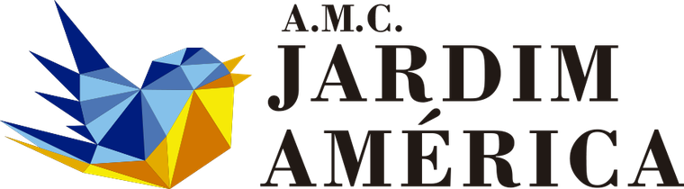

ELDORADO — Radar de recursos
Novas oportunidades
Ver todas oportunidades ›
FAROL — Inteligência de decisão
—
Aderência média
—
Requisitos pendentes
Status de decisões
Ver todas ›Documentação pronta para protocolo
Ver todos os casos ›
Calendário de Editais
Fila prioritária
| Prioridade | Projeto enquadrado | Fonte | Valor citado | Prazo | Documentação | Ações |
|---|
Em andamento
⨯ Limpar filtros
Oportunidades de Empresas
⨯ Limpar
Patrocínio privado — marketing, sem benefício fiscal
ELDORADO

Mapa de oportunidades
⨯ Limpar filtros
Resumo do mês
Motores de Busca
Motores Opressores
⨯ Limpar
Documentos das associações
Enquadramento — investigação com IA e aderência
Associações cadastradas — enquadramento e Farol de aderência
Farol de Alexandria — aderência
—/100
—
Calendário de resultados e recursos
Biblioteca de Alexandria